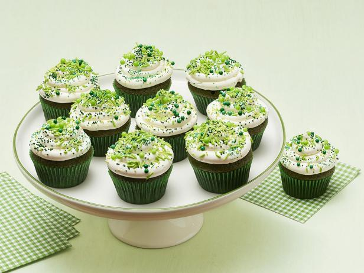

Green Velvet Cupcakes

If you are looking for an easy recipe for Green Velvet Cupcakes or a Green Velvet Cake for St. Patricks Day,
I have got you covered! These easy St. Patricks Day cupcakes have been of my most popular holiday recipes for years.
This simple green velvet recipe is fun, festive and delicious,
especially when topped with cream cheese frosting!
Ingredients
For the cupcakes:
- 1 cup cake flour (not self-rising)
- 2 tablespoons unsweetened cocoa powder
- 1/2 teaspoon baking soda
- 1/4 teaspoon salt
- 3/4 cup sugar
- 1/2 cup milk
- 1/2 cup vegetable oil
- 1 large egg
- 1 tablespoon distilled white vinegar
- 1 teaspoon pure vanilla extract
- 1/2 teaspoon green gel food coloring
For the frosting:
- 2 ounces white chocolate, chopped
- 3 large egg whites, at room temperature
- 3/4 cup sugar
- 1/4 teaspoon salt
- Pinch of cream of tartar
- 2 sticks unsalted butter, cut into pieces, at room temperature
- 1 teaspoon pure vanilla extract
- Assorted green sprinkles, for decorating
Directions
- Make the cupcakes: Preheat the oven to 350˚. Line a 12-cup muffin pan with paper liners.
Sift the cake flour, cocoa powder, baking soda and salt into a large bowl.
Whisk the sugar, milk, vegetable oil, egg, vinegar and vanilla in a separate large bowl.
Whisk in the flour mixture until smooth.
Add the green food coloring and stir until combined.
- Divide the batter among the prepared muffin cups, filling them three-quarters of the way.
Bake until a toothpick inserted into the centers comes out clean, about 15 minutes.
Let cool slightly in the pan, then remove to a rack to cool completely.
- Meanwhile, make the frosting: Put the white chocolate in a small heatproof bowl set over
a saucepan of simmering water (do not let the bowl touch the water). Cook, stirring,
until melted; remove the bowl from the pan and let cool slightly.
Reserve the pan of simmering water.
- Whisk the egg whites, sugar, salt and cream of tartar in a large heatproof bowl set over the pan
of simmering water (do not let the bowl touch the water). Cook, whisking, until the sugar
dissolves and the mixture registers 130˚ on a candy thermometer, 3 to 5 minutes.
Remove the bowl from the pan; beat with a mixer on high speed until stiff peaks form, 1 to 2 minutes.
Reduce the mixer speed to medium and beat until the bowl is no longer warm, 1 to 2 more minutes.
- Increase the mixer speed to medium high and continue beating, adding the butter one piece at a
time, until thick and combined. (The mixture might separate, but keep beating and it will smooth out.)
Add the melted white chocolate and vanilla and continue beating until just combined.
- Transfer the frosting to a resealable plastic bag and snip a corner.
Pipe onto the cupcakes and decorate with green sprinkles.